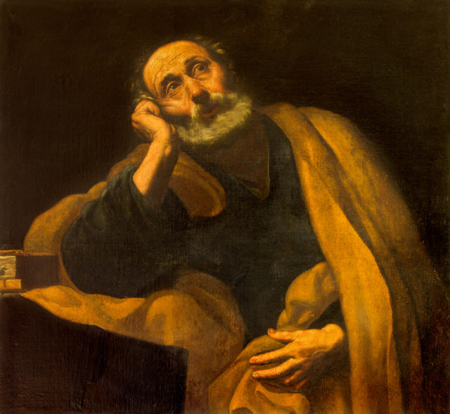

Christ changed Simon's name to be Peter
(petros = a rock or a stone.)

Matthew 16:18-19And I say also unto thee, That thou art Peter, and upon this rock I will build
my church; and the gates of hell shall not prevail against it. And I will give unto thee the keys of
the kingdom of heaven: and whatsoever thou shalt bind on earth shall be bound in heaven: and
whatsoever thou shalt loose on earth shall be loosed in heaven.
Matthew 18:17-18And if he shall neglect to hear them, tell it unto the church: but if he neglect
to hear the church, let him be unto thee as an heathen man and a publican. Verily I say unto
you, Whatsoever ye shall bind on earth shall be bound in heaven: and whatsoever ye shall
loose on earth shall be loosed in heaven.
John 21:15 So when they had dined, Jesus saith to Simon Peter, Simon, son of Jonas, lovest
thou me more than these? He saith unto him, Yea, Lord; thou knowest that I love thee. He saith
unto him, Feed my lambs.
Jesus and Paul call for the church to be in one body
Ephesians 4:4-6
There is one body and one Spirit, just as you were called in one hope of your calling; one Lord, one faith, one baptism; one God and Father of all, who is above all, and through all, and in you all.
John 17:21That they all may be one; as thou, Father, art in me, and I in thee, that they also
may be one in us: that the world may believe that thou hast sent me.
Jesus prays for Peter alone to overcome temptation after the disciples squabble over who is the greatest.
"And there was also a strife among them, which of them should be accounted the greatest.
And he said unto them, The kings of the Gentiles exercise lordship over them; and they that exercise authority upon them are called benefactors.
But ye shall not be so: but he that is greatest among you, let him be as the younger; and he that is chief, as he that doth serve.
For whether is greater, he that sitteth at meat, or he that serveth? is not he that sitteth at meat? but I am among you as he that serveth.
Ye are they which have continued with me in my temptations.
And I appoint unto you a kingdom, as my Father hath appointed unto me;
That ye may eat and drink at my table in my kingdom, and sit on thrones judging the twelve tribes of Israel.
And the Lord said, Simon, Simon, behold, Satan hath desired to have you, that he may sift you as wheat:
But I have prayed for thee, that thy faith fail not: and when thou art converted, strengthen thy brethren.
And he said unto him, Lord, I am ready to go with thee, both into prison, and to death."
Luke 22:24-33
Church Fathers on Peter and Catholic language
"I would not believe in the Gospel, if the authority of the Catholic Church did not bid
me to do so."
-Augustine
“Let that be deemed a proper Eucharist, which is administered
either by the Bishop, or where by one to whom he has entrusted it. Wherever the Bishop shall
appear, there let the multitude of people also be; even as wherever Jesus Christ is, there is the
Catholic Church.”
-St. Ignatius of Antioch (107 AD)
“On Peter, he builds the Church…a primacy given to Peter, whereby
it is made clear that there is but one Church and one chair…He who deserts the chair of Peter,
upon whom the church was founded, does he trust himself to be in the church?”
St. Cyprian (200-258 AD)
“Fly to the Catholic Church! Adhere to the only faith which
continues to exist from the beginning, that faith, which was preached Paul and is upheld by the
chair of Peter period.”
-St. Hippolytus of Rome (215AD)
“The greatest and most ancient church known to all, founded and
organized at Rome by the two most glorious apostles, Peter and Paul, that church which has
the tradition and the faith which comes down to us after having been announced to men by the
apostles. With that church, because of its superior origin, all the churches must agree, that is, all
the faithful in the whole world, and it is in her that the faithful everywhere have maintained the
apostolic tradition.”
-St. Irenaeus (202 AD)
Against Heresies
“The blessed apostles, then, having founded and built up the Church,
committed into the hands of Linus the office of the episcopate.”
Irenaeus of Lyons - 189 AD
“Let him first hasten to satisfy the See of Rome… It is futile
to try and persuade one like me without instead trying to satisfy and implore the blessed Pope of
the holy Church of Rome. For that is the Apostolic See, which has received from the Incarnate
Son of God Himself, universal and supreme dominion, authority, and the power of binding and
loosing over all the holy churches. This is confirmed by all holy synods, according to the holy
canons in the whole world.”
-St. Maximus the Confessor (640 AD)
Back to Top